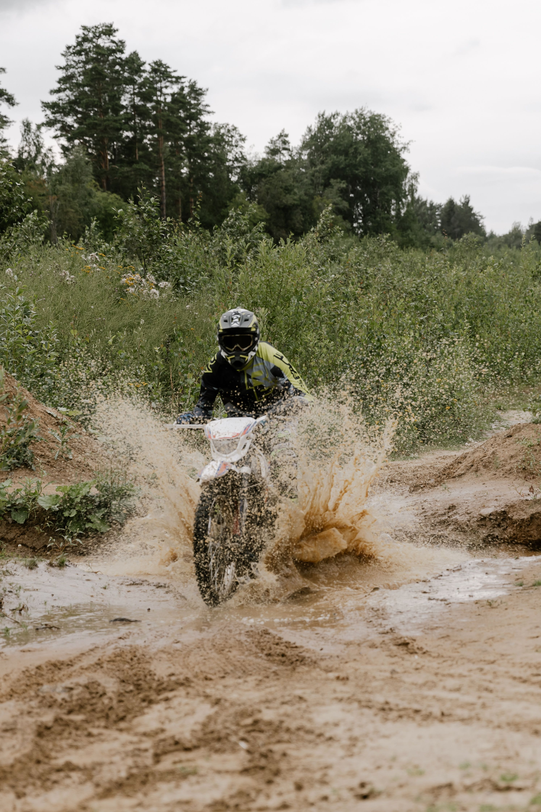
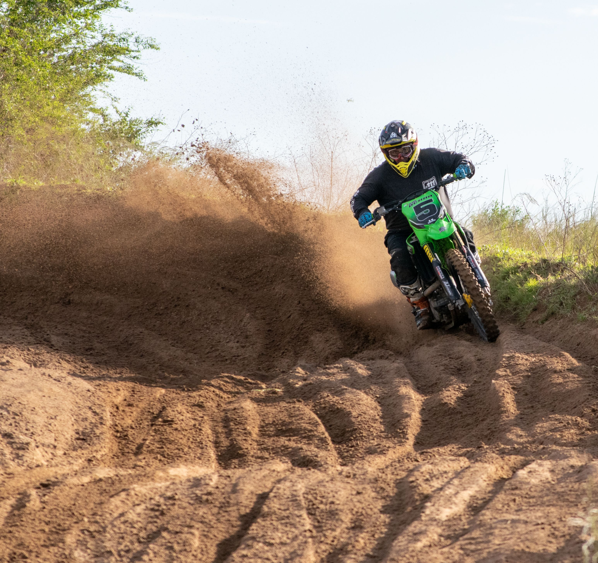
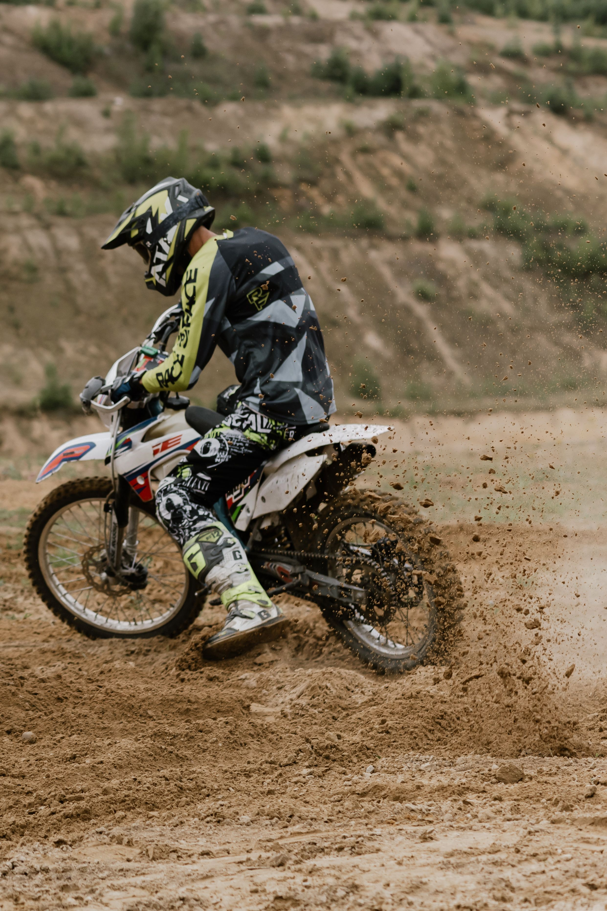

Off-road motorcycles are designed for riding on dirt, mud, sand, rocks, and other rough surfaces.

They have strong suspension systems to absorb shocks from bumps, jumps, and uneven trails.

High ground clearance helps them move over rocks, obstacles, and rough paths more easily.